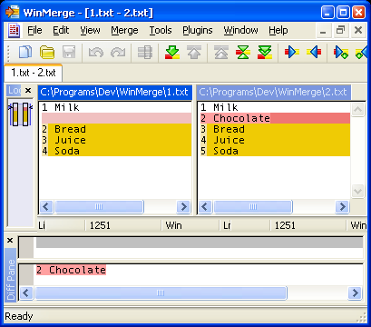
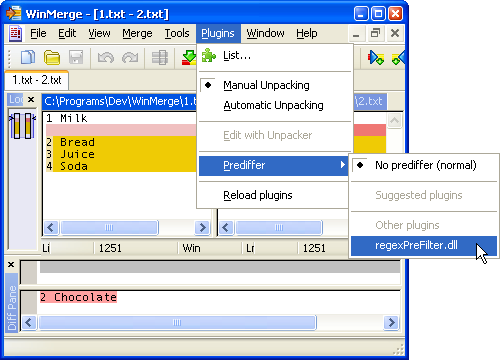
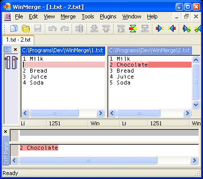

I found this WinMerge plugin on SourceForge, and decided to improve it a little. I'm giving the result back to the community so that maybe someone picks it up and takes it further someday. Alexander Ilin, 2015.
The plugin is used to apply regular expression filtering on per-line basis. Start your file comparison as usual, then select the regexPreFilter.dll in the Plugins menu. The parts of the file that match one of the regular expressions will be considered unmodified by WinMerge.
Let's say you have two files with grocery lists:

It looks like almost entire file was rewritten, but in fact only one line was added, and the rest of the lines below it only had their numbers updated. We'd like to ignore the difference in line numbers and focus on the content changes, so we put the following regular expression in the regexPreFilter.regex file:
^[0-9]+
Next, we select the plugin in the main menu:

Now all we see are the important changes:

Each line of the regex-file contains a separate rule.
You can modify the rules on the fly, the regex-file is reread every time comparison is redone (press F5 to recompare the currently open files in WinMerge).
You can create multiple copies of the plugin DLL with different names. Each copy will load the corresponding regex-file. This way you can have multiple rulesets selectable in the Prediffer menu.
You'll have to manually activate the plugin every time you compare files. It is off by default, and there is no way to enable it automatically (as of WinMerge v2.14). This is probably a good thing: you would not want to miss some changes without explicitly making them disappear.